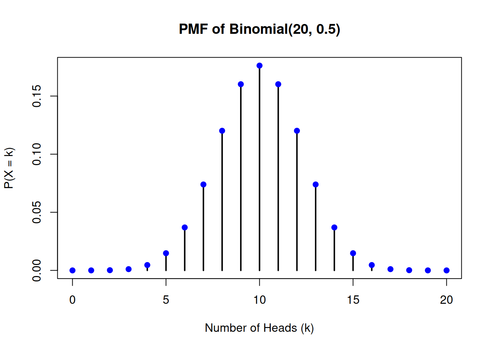

# Plot bars
plot(1:6, rep(1/6,6), type = "h",
main = "Probability Distribution",
xlab = "Outcome",
ylab = "Probability")
# Add blue filled points at the top of each bar
points(1:6, rep(1/6, 6), pch = 16, col = "blue")
Random variables are the main mathematical tool that allows us to quantify and analyze uncertainty in Finance for complex portfolios and other financial contexts like risk management. In all of these contexts random variables provide the foundation for probabilistic reasoning.
Throughout the previous lectures, we have encountered concepts such as conditional probabilities, dependencies, and independence. These ideas have helped us build intuition for modeling uncertainty. However, as we move into more advanced applications like portfolio risk modeling and asset price dynamics, a more explicit and formal treatment of random variables becomes unavoidable.
Random variables are at the core of probability theory, serving as a bridge between real-world phenomena and mathematical models. They allow us to represent uncertain outcomes numerically and provide a framework for analyzing those outcomes using tools such as expected value, variance, and covariance. These measures are indispensable for understanding and managing financial risk. Random variables play a vital role in applications like:
By the end of this lecture, you will:
A random variable is a numerical outcome of a random phenomenon. Formally, a random variable is a function that assigns a real number to each outcome in the sample space of a random experiment. More explicitly:
A random variable \(X\) is a function \(X:\mathcal{S} \to \mathbb{R}\) from the sample space (the set of all possible outcomes of the random experiment) to the real numbers.
A random variable is thus a function defined on the sample space of a random experiment. This formal definition allows us to generalize and analyze a wide variety of real-world scenarios. For instance:
By explicitly recognizing these as random variables, we can now apply a systematic framework to quantify their behavior and analyze them.
Note that it is a widely held convention in probability theory to use capital letters such as \(X\) and \(Y\) etc. as symbols of a random variable.
Random variables come in two varieties, depending on the properties of the sample space \({\cal S}\). If the sample space is a finite or countably finite set, the sample space is discrete and we talk of a discrete random variables.
Sometimes it is natural to consider continuous sample spaces. For example when we consider the return of an asset over a year or the price of a stock at a specific time. In this case we call a random variable continuous. With continuous sample spaces we will need tools from calculus. We will discuss continuous random variables in the next lecture. Here we stick with the concept of a discrete random variable.
In the case of a discrete sample space we can theoretically tabulate and random variable \(X\) by enumerating in some order all points in the sample space and associating with each the corresponding value of \(X\).
A random variable is characterized by its probability distribution, which describes how probabilities are assigned to its possible values.
Let \(X\) be a random variable and \(x_1, x_2, ...\) the values which it assumes. The aggregate of all sample points on which \(X\) assumes a fixed value \(x_i\) is form the event \(X = x_i\). It’s probability is denoted by \(P(X = x_i)\). The function: \[\begin{equation*} P(X = x_i) = p(x_i), \,\, i=1,2,... \end{equation*}\] is called the probability distribution of the random variable \(X\).
where \(p(x_i)\) satisfies:
We can visualize the probability distribution of a discrete random variable using R in a standard example: Consider a random variable \(X\) that represents the outcome of rolling a fair six-sided die. The probability distribution is: \(P(X = x_i) = \frac{1}{6}, \quad i = 1, 2, 3, 4, 5, 6\).
This can be visualized as:
# Plot bars
plot(1:6, rep(1/6,6), type = "h",
main = "Probability Distribution",
xlab = "Outcome",
ylab = "Probability")
# Add blue filled points at the top of each bar
points(1:6, rep(1/6, 6), pch = 16, col = "blue")
This plot shows that each outcome has an equal probability of \(\frac{1}{6}\) symbolized as a bar. For better readability of the graph we symbolized the function values at \(1/6\) by a blue filled dot.
Let me discuss some common confusions that arise often with understanding the concept of a random variable.
Random Variable vs. Outcome: A random variable is not the same as an individual outcome. It is a function that assigns values to outcomes. The confusion is partially created by the name. Maybe a better term would be a random mapping. Anyway, keep in mind that a random variable is a function defined on the sample space.
Probability Distribution vs. Histogram: A probability distribution represents theoretical probabilities. Don’t mix this concept up with the concept of a histogram, known from statistics and data analysis, which shows frequencies of empirical data.
Discrete vs. Continuous: Discrete variables take specific values (e.g., dice outcomes), while continuous variables can take any value in a range. Dealing with continuous variables needs specifc tools which we discuss in lecture 5.
Think of scenarios where you could define a discrete random variable.
For instance:
Simulate and visualize the Probability distribution of these examples in R. You can take the visualization approach we took here. You could also try to make use of R’s barplot() function.
A related concept to the probability distribution, is the cumulative distribution function (CDF). It can also be used to describe a discrete random variable. The CDF provides the probability that the random variable \(X\) takes a value less than or equal to a specific value \(x\):
The cumulative distribution function - abbreviated CDF - shows the probability that a random variable \(X\) take a value less than or equal to a given value \(x_i\). It is usually denoted as \(F(x_i) = P(X \leq x_i)\) where \(F\) is non-decreasing and \(0 \leq F(x_i) \leq 1\) for \(i = 1,2,...\)
In the case of a discrete random variable the cumulative distribution function (CDF) is a step function, increasing by jump discontinuities. The points where the jumps occur are exactly at the values the random variable can take.
The CDF, \(F(x)\), can be computed in this case as:
The CDF can be visualized as a step function, showing the cumulative probabilities:
x <- 1:6
cdf <- cumsum(rep(1/6, 6))
# Plot the empty plot frame
plot(0:6, c(0, cdf), type = "n",
main = "Cumulative Distribution Function",
xlab = "Outcome",
ylab = "F(x)",
xlim = c(0, 6.5), ylim = c(0, 1))
# Draw the first horizontal bar
segments(0, 0, 1, 0, col = "blue", lwd = 2)
points(0, 0, pch = 16, col = "blue") # Closed circle at (0, 0)
points(1, 0, pch = 1, col = "blue", cex = 1.2) # Open circle at (1, 0)
# Draw the stepwise CDF
for (i in 1:(length(x) - 1)) {
# Draw the horizontal bar for each step
segments(x[i], cdf[i], x[i + 1], cdf[i], col = "blue", lwd = 2)
# Add the closed circle at the start of the segment
points(x[i], cdf[i], pch = 16, col = "blue") # Filled circle
# Add the open circle at the end of the segment
points(x[i + 1], cdf[i], pch = 1, col = "blue", cex = 1.2) # Open circle
}
# Draw the last horizontal bar and closed circle at the end
segments(6, cdf[6], 6.5, cdf[6], col = "blue", lwd = 2)
points(6, cdf[6], pch = 16, col = "blue") # Closed circle at (6, 1)This visualization of the cumulative distribution function (CDF) is a great example of how graphs in R can be constructed step by step using layers and overlays. Let’s break it down to understand how the graph is built:
We start with a blank canvas and create an empty plot frame using plot() with type = "n". The type = "n" argument ensures that no points or lines are drawn initially, allowing us to control exactly what is added to the plot later. This blank canvas defines the axes, labels, and range, providing a foundation for the layers to come.
The first horizontal line is drawn using segments(), starting from (0, 0) to (1, 0). We add a filled circle (pch = 16) at the start (0, 0) and an open circle (pch = 1) at the end (1, 0) using points(). This step visually initializes the CDF at the correct starting point.
Each step of the CDF is added one at a time using a loop. For each step: - A horizontal line is drawn to represent the constant value of the CDF over that interval. - A closed circle is placed at the beginning of the line to indicate that the value is included in the CDF at that point. - An open circle is added at the end to show that the value is not included yet, highlighting the jump discontinuity.
The final horizontal line is added separately to show the end of the CDF. A closed circle is placed at the end of the last step to signify the inclusion of the final value in the distribution.
Here are some key points to keep in mind when working with cumulative distribution functions (CDFs):
The concepts of a probability distribution function and cumulative distribution function (CDF) can be extended to more than one random variable. When working with multiple random variables, we are often interested in their joint distribution, which describes how they behave together, and conditional distributions, which describe how one variable behaves given specific information about another. I discuss here the generalization to two random variables. All of the following discussion generalizes to more than two random variables.
Consider now two discrete random variables \(X\) and \(Y\) defined on the same sample space and let \(x_1,x_2, ...\) and \(y_1,y_2,...\) the values which they assume. Let \(f(x_i)\) and \(g(y_j)\) be the corresponding distribution functions. The aggregate of points in which the two condistions \(X=x_i\) and \(Y=y_j\) are satisfied forms an event whose probability is denoted by \[P(X = x_i, Y = y_j) = p(x_i, y_j), \,\, i,j,=1,2,...\] is called the joint probability distribution of \(X\) and \(Y\). where \(p(x_i, y_j)\) satisfies:
Let me give an example: Imagine rolling two fair six-sided dice. Let \(X\) and \(Y\) represent the outcomes of the first and second dice, respectively. The joint PMF is: \[P(X = x_i, Y = y_j) = \frac{1}{36}, \quad x_i, y_j = 1, 2, 3, 4, 5, 6.\]
This joint probability distribution captures the probability of every possible pair of outcomes, such as \((X = 2, Y = 5)\).
One visualization tool for two dimensional probability distributions the heatmap. The \(x\) and \(y\) axis of the heat map symbolized the values of \(X\) and \(Y\) whereas the third dimension visualizes the probability of each pair of values \((x_i,y_j)\) by a color code. So, for example when the dice are fair we should have a probability of \(1/36\) for each basic outcome, so you should see only one uniform color.
To illustrate this visualization concept, imagine an example where the dice are biased and not fair, so the probabilities of outcomes can differ:
# Define the outcomes and probabilities for two biased dice
outcomes <- 1:6
prob_die1 <- c(0.05, 0.1, 0.2, 0.25, 0.2, 0.2) # Probabilities for die 1
prob_die2 <- c(0.1, 0.15, 0.2, 0.25, 0.2, 0.1) # Probabilities for die 2
# Compute the joint PMF as the outer product of the two probability vectors
joint_pmf <- outer(prob_die1, prob_die2)
# Create a heatmap using the image() function
image(
1:6, 1:6, joint_pmf,
col = colorRampPalette(c("white", "blue"))(100),
xlab = "Outcome of Die 2",
ylab = "Outcome of Die 1",
main = "Heatmap of Joint PMF (Two Biased Dice)",
axes = FALSE
)
# Add axis labels
axis(1, at = 1:6, labels = outcomes)
axis(2, at = 1:6, labels = outcomes)
# Add a color legend
legend(
"topright",
legend = round(seq(min(joint_pmf), max(joint_pmf), length.out = 5), 3),
fill = colorRampPalette(c("white", "blue"))(5),
title = "Probability"
)
Here you see immediately that something is fishy with the dice. Would the dice be fair there should be a uniform color all over the heatmap with a color at the value of \(1/36\) or \(0.03\). Try it!
With this notation we can also define the notion of a conditional probability for discrete random variables.
The conditional probability of an event \(Y=y_j\), given \(X=x_i\) with \(f(x_i) > 0\) is defined as \[ P(Y = y_j | X = x_i) = \frac{p(x_i,y_j)}{f(x_i)} \]
In this way a number is associated with every value of \(X\) and so defines a function on \(X\). This function is called
The conditional distribution of \(Y\) for given \(X\) and denoted by \[ P(Y = y_j|X) \]
Let’s note a few improtant points about conditional distributions:
On the other hand, if the joint probability distribution \(p(x_i, y_j)\) factorizes as: \[ p(x_i, y_j) = f(x_i) g(y_j) \quad \text{for all pairs } (x_i, y_j), \] then \(X\) and \(Y\) are independent. This implies that the occurrence of one event (e.g., \(X = x_i\)) has no influence on the probability of the other (e.g., \(Y = y_j\)). The joint distribution in this case takes the form of a multiplication table, where the probabilities are products of the marginal probabilities. When \(X\) and \(Y\) are independent, their interaction is minimal, and no inference can be drawn about one variable from the other.
The joint distribution \(p(x_i, y_j)\) uniquely determines the marginal distributions \(f(x_i)\) and \(g(y_j)\), as these can be computed by summing over the appropriate dimensions: \[ f(x_i) = \sum_j p(x_i, y_j), \quad g(y_j) = \sum_i p(x_i, y_j). \] However, the reverse is not true: the marginal distributions \(f(x_i)\) and \(g(y_j)\) alone do not determine the joint distribution \(p(x_i, y_j)\). For example, different joint distributions can have the same marginals but encode different types of dependence or independence between \(X\) and \(Y\).
Note that two random variables \(X\) and \(Y\) can have the same marginal distribution \(f(x_i) = g(y_j)\) but may or may not be independent. For instance:
At this stage it might be a good idea to recall the example on structured finance from lecture 3. The random variables hidden in this example are default indicators \(X\) for bond 1 and \(Y\) with \(X: \{D,N\} \mapsto \{0,1\}\) and \(Y: \{D,N\} \mapsto \{0,1\}\)
In the case of independence we had a contingency table like this:
# Marginal probabilities for B_1
P_N <- 0.9 # Probability that B_1 does not default
P_D <- 0.1 # Probability that B_1 defaults
# Conditional probabilities for B_2 given B_1
P_N_given_N <- 0.81 # Probability that B_2 does not default given B_1 does not default
P_D_given_N <- 0.09 # Probability that B_2 defaults given B_1 does not default
P_N_given_D <- 0.09 # Probability that B_2 does not default given B_1 defaults
P_D_given_D <- 0.01 # Probability that B_2 defaults given B_1 defaults
# Load necessary library
library(kableExtra)
# Define marginal probabilities
P_N_total <- P_N
P_D_total <- P_D
P_N_given_total <- round(P_N_given_N + P_D_given_N,2)
P_D_given_total <- round(P_N_given_D + P_D_given_D,2)
# Create the contingency table
contingency_table <- matrix(
c(
P_D_given_D, P_D_given_N, P_D_total, # Row 1: Bond 1 Default
P_N_given_D, P_N_given_N, P_N_total, # Row 2: Bond 1 No Default
P_D_given_total, P_N_given_total, 1 # Row 3: Column totals
),
nrow = 3,
byrow = TRUE,
dimnames = list(
c("Bond 1: Default (D)", "Bond 1: No Default (N)", "Total"),
c("Bond 2: Default (D)", "Bond 2: No Default (N)", "Total")
)
)
# Create a styled table
kable_output <- knitr::kable(
contingency_table,
caption = "Contingency Table of Joint and Marginal Probabilities: Independence",
format = "html",
escape = FALSE,
col.names = c("", "Default (D)", "No Default (N)", "Total")
) %>%
kableExtra::column_spec(1, bold = TRUE)
# Render the table
kable_output| Default (D) | No Default (N) | Total | |
|---|---|---|---|
| Bond 1: Default (D) | 0.01 | 0.09 | 0.1 |
| Bond 1: No Default (N) | 0.09 | 0.81 | 0.9 |
| Total | 0.10 | 0.90 | 1.0 |
The joint probabilities in this case are just the product of the marginal probabilities and the contingency table is similar to a multiplication table.
In the case of dependence this case changes. The new contingency table now looks like this:
# Load necessary library
library(kableExtra)
# Updated values from the table
P_D_given_D <- 0.06 # Probability that Y defaults given X defaults
P_N_given_D <- 0.04 # Probability that Y does not default given X defaults
P_D_given_N <- 0.04 # Probability that Y defaults given X does not default
P_N_given_N <- 0.86 # Probability that Y does not default given X does not default
P_D_total <- 0.1 # Marginal probability that Y defaults
P_N_total <- 0.9 # Marginal probability that Y does not default
# Define totals
P_D_given_total <- P_D_given_D + P_D_given_N
P_N_given_total <- P_N_given_D + P_N_given_N
# Create the contingency table
contingency_table <- matrix(
c(
P_D_given_D, P_D_given_N, P_D_total, # Row 1: X Default
P_N_given_D, P_N_given_N, P_N_total, # Row 2: X No Default
P_D_given_total, P_N_given_total, 1 # Row 3: Column totals
),
nrow = 3,
byrow = TRUE,
dimnames = list(
c("X: Default (d)", "X: No Default (n)", "Total"),
c("Y: Default (d)", "Y: No Default (n)", "Total")
)
)
# Create a styled table
kable_output <- knitr::kable(
contingency_table,
caption = "Contingency Table of Joint and Marginal Probabilities: Dependence",
format = "html",
escape = FALSE
) %>%
kableExtra::column_spec(1, bold = TRUE)
# Render the table
kable_output| Y: Default (d) | Y: No Default (n) | Total | |
|---|---|---|---|
| X: Default (d) | 0.06 | 0.04 | 0.1 |
| X: No Default (n) | 0.04 | 0.86 | 0.9 |
| Total | 0.10 | 0.90 | 1.0 |
Note that in both cases the marginal probabilities look the same. So in the case of structured finance, a superficial analysis looking at each bond in isolation and assuming independence might make a fatally wrong risk asessment.
For instance, consider \(X\) and \(Y\) that both represent the outcomes of rolling two fair dice. If \(X\) and \(Y\) are independent, the joint probabilities \(p(x_i, y_j)\) will simply be products of the marginal probabilities. However, if \(X = Y\) (e.g., the two dice always show the same value), the joint distribution will reflect perfect dependence, and \(X\) and \(Y\) are no longer independent despite having identical marginal distributions.
Here is a visualization of this situation:
# Define a joint PMF for dependent dice: one die matches the other
outcomes <- 1:6
joint_pmf <- diag(1/6, 6, 6) # Probability of matching outcomes is 1/6 for each pair
# Create heatmap for the dependent joint PMF
image(
1:6, 1:6, joint_pmf,
col = colorRampPalette(c("white", "blue"))(100),
xlab = "Outcome of Die 2",
ylab = "Outcome of Die 1",
main = "Heatmap of Joint PMF (Dependent Dice)",
axes = FALSE
)
axis(1, at = 1:6, labels = outcomes)
axis(2, at = 1:6, labels = outcomes)
# Add a color legend
legend(
"topright",
legend = round(seq(min(joint_pmf), max(joint_pmf), length.out = 5), 3),
fill = colorRampPalette(c("white", "blue"))(5),
title = "Probability"
)Keep in mind:
In our very first lecture we modeled the flipping of a fair coin using probability theory and R. When we modeled the coin flip with R and tried to visualize, we flipped the coin many times.
Say we flip the coins 10 times. How many heads do you expect to see? What’s the likelihood of getting exactly three heads? These questions, simple yet profound, are at the heart of the binomial distribution —one of the most important and versatile models of a discrete random variable.
The binomial distribution arises whenever we repeat a simple experiment, known as a Bernoulli trial, multiple times under the same conditions. Each trial has two possible outcomes, often labeled as “success” and “failure.” By counting the number of successes in a fixed number of trials, the binomial distribution provides a complete picture of the probabilities associated with all possible outcomes.
But why is the binomial distribution so crucial? For one, it is ubiquitous in applications. From predicting election outcomes to evaluating the reliability of systems and understanding financial risks, the binomial model underpins countless real-world phenomena. More importantly, it serves as a foundational tool for understanding the behavior of discrete random variables, providing a framework to compute probabilities, analyze expectations, and quantify variability.
In this section, we’ll explore the binomial distribution in depth. We’ll derive its probability mass function, visualize its cumulative distribution function, and compute key statistics like the mean and variance. Through this concrete example, you’ll not only solidify your understanding of random variables but also gain a versatile tool for modeling uncertainty in diverse contexts.
In Lecture 1, we flipped a fair coin and asked: “What’s the likelihood of heads? How many heads would we expect in multiple flips?” Now, let’s deepen our understanding by connecting these questions to key concepts in probability: expected value, variance, and standard error.
Consider a single flip of a fair coin. Let’s define a random variable \(X\), where: - \(X = 1\) if the coin lands heads (success), - \(X = 0\) if the coin lands tails (failure).
This is an example of a Bernoulli random variable, the simplest discrete random variable.
Let \(X\) be a random variable assuming the values \(x_1,x_2,x_3, \dots\) with probabilities \(p(x_1), p(x_2), p(x_3), \dots\). The expected value of \(X\) is defined by \[ \mathbb{E}[X] = \sum_{x_i} x_i \cdot p(x_i) \] provided the series converges absolutely. In this case, we say that \(X\) has finite expectation. If \(\sum |x_i| p(x_i)\) diverges, we say that \(X\) has no finite expectation.
It is sometimes convenient - and we have done so repeatedly in this lecture - to interpret probabilities as limits of observable frequencies in repeated, independent random experiments.
This would lead to the following intuitive interpretation of expectation. Let the experiment be repeated \(n\) times under identical conditions and denote by \(X_1,X_2,...,X_n\) the values of \(X\) that were actually observed, then for large \(n\) the average of these values should be close to \(\mathbb{E}[X]\).
While the terms mean, average and expectation are synonymous, expectation is usually used in relation to random variables, whereas mean and average is used in relation to empirical data.
Let us compute the expected value of the Bernoulli random variable \(X\): \[ \mathbb{E}[X] = 1 \cdot p + 0 \cdot (1-p) = p. \] Thus, the expected value of \(X\) is \(p\). For a fair coin (\(p = 0.5\)), \(\mathbb{E}[X] = 0.5\). This means that in the long run, half of the flips are expected to result in heads.
While the expected value gives the central tendency, the variance quantifies the spread of a random variable’s possible outcomes around its expected value.
Let \(X\) be a random variable assuming the values \(x_1,x_2,x_3, ...\) with probabilities \(p(x_1), p(x_2, p(x_3), ...\). The variance of \(X\) is defined by \[ \text{Var}(X) = \mathbb{E}[(X - \mathbb{E}[X])^2]. \]
For discrete random variables, this can be written as: \[ \text{Var}(X) = \sum_{x_i} (x_i - \mathbb{E}[X])^2 \cdot p(x_i). \] Let’s look again at how this applies to the Bernoulli variable. For our Bernoulli random variable \(X\), substituting \(\mathbb{E}[X] = p\): \[ \text{Var}(X) = (1 - p)^2 \cdot p + (0 - p)^2 \cdot (1-p) = p(1-p). \] For a fair coin (\(p = 0.5\)): \[ \text{Var}(X) = 0.5 \cdot 0.5 = 0.25. \]
The standard error (SE) is the square root of the variance: \[ \text{SE}(X) = \sqrt{\text{Var}(X)}. \] For our fair coin: \[ \text{SE}(X) = \sqrt{0.25} = 0.5. \] The standard error is often more convenient than the variance because it is expressed in the same units as the expected value. It thus gives as a clear sense how much the random variable is spread around the mean in the units of the mean. Here is an example.
Suppose a stock’s daily return, \(X\), is modeled as a random variable with an expected return of 0.002 (0.2%) and a variance of \(\text{Var}(X)=0.0004\) (0.04%). The variance is expressed in squared units of the return. While mathematically precise, it is not immediately interpretable because we don’t think of returns in squared terms. The standard error is 0.02 (2%) is expressed in the same units as the return. This tells us that daily returns typically deviate by about 2% from the expected return of 0.2%. This demonstrates why the standard error is often preferred when communicating uncertainty—it translates mathematical variability into a form that aligns with practical understanding.
Now let’s build on this foundation. Suppose we flip the coin \(n\) times and count the total number of heads. This total is a binomial random variable \(X\), with parameters: - \(n\): number of trials, - \(p\): probability of heads.
A binomial random variable is a discrete random variable with the \(X\) with probability distribution \[ P(X = k) = \binom{n}{k} p^k (1-p)^{n-k}, \quad k = 0, 1, \dots, n, \] where \(\binom{n}{k}\) is the number of ways to choose \(k\) successes in \(n\) trials.
The outcomes of a binomial random variable can be visualized as a binomial lattice. In the following figure Figure 1 we visualize the case where a coin is tossed twice.

Note that we the order of occurence of Heads and Tails does not matter. We only count how many times they occur. Therefore the sequence HT ends in the same node as TH.
We can compute its expected value and variance of a binomial random variable using what we’ve learned: \[ \mathbb{E}[X] = n \cdot p, \quad \text{Var}(X) = n \cdot p \cdot (1-p), \quad \text{SE}(X) = \sqrt{n \cdot p \cdot (1-p)}. \] Let us briefly derive these results from the definitions:
To derive the expected value and variance of a binomial random variable \(X\), we use the definitions and properties of expectation and variance step-by-step.
A binomial random variable \(X\) represents the number of successes in \(n\)
independent trials, where each trial has:
The probability density function of \(X\) is given by: \[ P(X = k) = \binom{n}{k} p^k (1-p)^{n-k}, \quad k = 0, 1, 2, \dots, n. \] The expected value is defined as: \[ \mathbb{E}[X] = \sum_{k=0}^n k \cdot P(X = k). \]
Substituting: \[ \mathbb{E}[X] = \sum_{k=0}^n k \cdot \binom{n}{k} p^k (1-p)^{n-k}. \] The binomial random variable \(X\) can be viewed as the sum of \(n\) independent Bernoulli random variables \(X_i\), where each \(X_i\) is 1 for success and 0 for failure. That is: \[ X = \sum_{i=1}^n X_i, \] where \(\mathbb{E}[X_i] = p\).
By the linearity of expectation: \[ \mathbb{E}[X] = \mathbb{E}\left[\sum_{i=1}^n X_i\right] = \sum_{i=1}^n \mathbb{E}[X_i] = n \cdot p. \] The variance of \(X\) is defined as: \[ \text{Var}(X) = \mathbb{E}[X^2] - (\mathbb{E}[X])^2. \] We know \(X = \sum_{i=1}^n X_i\). Using the property of variance for independent random variables: \[ \text{Var}(X) = \text{Var}\left(\sum_{i=1}^n X_i\right) = \sum_{i=1}^n \text{Var}(X_i). \]
For a Bernoulli random variable \(X_i\): \[ \text{Var}(X_i) = \mathbb{E}[X_i^2] - (\mathbb{E}[X_i])^2. \]
Since \(X_i\) takes values 0 and 1: \[ X_i^2 = X_i, \quad \text{so } \mathbb{E}[X_i^2] = \mathbb{E}[X_i] = p. \]
Thus: \[ \text{Var}(X_i) = p - p^2 = p(1-p). \]
Now summing over all \(n\) trials: \[ \text{Var}(X) = \sum_{i=1}^n \text{Var}(X_i) = n \cdot p(1-p). \]
For \(n = 10\), \(p = 0.5\): \[ \mathbb{E}[X] = 10 \cdot 0.5 = 5, \quad \text{Var}(X) = 10 \cdot 0.5 \cdot 0.5 = 2.5, \quad \text{SE}(X) = \sqrt{2.5} \approx 1.58. \]
To solidify these concepts, let’s compute and visualize the probability distribution of a binomial random variable for \(n = 10\), \(p = 0.5\). This shows the probabilities of obtaining 0, 1, 2, …, 10 heads.
# R Code to Compute and Plot PMF
n <- 20
p <- 0.5
k <- 0:n
pmf <- dbinom(k, size = n, prob = p)
plot(k, pmf, type = "h", lwd = 2, main = "PMF of Binomial(20, 0.5)",
xlab = "Number of Heads (k)", ylab = "P(X = k)", col = "black")
points(k, pmf, pch = 19, col = "blue")
Key Observations: - The probability density function is symmetric around the expected value \(\mathbb{E}[X] = 10\) because \(p = 0.5\). - The spread is captured by the variance and standard error, with most probabilities concentrated around the mean. The standard error is 2.2
The binomial distribution shows the power and versatility of the basic coin model we introduced right at the beginning of this course. It is the basic building block of this distribution and is very powerful in modeling simple experiments and deriving key properties: - Expected value provides the long-run average. - Variance and standard error measure variability. - The PMF describes the probabilities of all possible outcomes.
These concepts form the foundation for understanding random variables and their distributions, bridging theory and real-world applications.
When we have more than one random variable we can summarize how they vary together. The concept that does this for us is covariance. Here is the definition:
The covaraince of two random variables \(X\) and \(Y\) is defined by \[ \text{Cov}(X,Y) = \mathbb{E}(X - \mathbb{E}[X])(Y-\mathbb{E}[Y]) \] Alternatively we can write \[ \text{Cov}(X,Y) = \mathbb{E}[XY] - \mathbb{E}[X]\mathbb{E}[Y] \] This definition is meaningful whenever \(X\) and \(Y\) have finite variance.
Note the following key points about covariance:
-If \(\text{Cov}(X,Y)>0\): \(X\) and \(Y\) tend to increase together (positive relationship).
-If \(\text{Cov}(X,Y)<0\): \(X\) and \(Y\) tend to move in opposite directions (negative relationship).
-If \(\text{Cov}(X,Y)=0\): \(X\) and \(Y\) are linearly uncorrelated, though they may still have a nonlinear relationship.
Covariance is often referred to as a linear measure of dependence. What does this mean? Covariance quantifies how the deviations of \(X\) and \(Y\) from their respective means are aligned. If \(X\) and \(Y\) tend to deviate in the same direction (both above or below their means), the product \((X - \mathbb{E}[X])(Y - \mathbb{E}[Y])\) will typically be positive, leading to a positive covariance. Conversely, if they deviate in opposite directions, this product will typically be negative, leading to a negative covariance.
Covariance captures only linear relationships because it measures the degree to which \(X\) and \(Y\) co-vary in a straight-line manner. If \(X\) and \(Y\) are related nonlinearly (e.g., quadratic, exponential), their covariance might still be zero even though a relationship exists.
Here’s an example to visualize covariance using two binomially distributed random variables:
# Simulating two binomial random variables
set.seed(123)
n <- 1000
X <- rbinom(n, size = 10, prob = 0.5) # Binomial(n=10, p=0.5)
Y <- X + rbinom(n, size = 10, prob = 0.3) # Dependent variable
# Covariance
cov_xy <- cov(X, Y)
# Scatterplot with regression line
plot(X, Y, main = "Scatterplot of X and Y with Regression Line",
xlab = "X (Binomial Random Variable)", ylab = "Y (Dependent Variable)",
pch = 16, col = rgb(0.2, 0.4, 0.6, 0.6))
abline(lm(Y ~ X), col = "red", lwd = 2) # Add regression line
legend("topright", legend = paste("Covariance =", round(cov_xy, 2)))
Here is what this visualization shows:
Covariance describes only the linear component of the relationship. If \(X\) and \(Y\) have a nonlinear dependency, the scatterplot may show a pattern (e.g., a curve) that the regression line and covariance fail to capture.
Covariance is not a good measure of dependence when the relationship between \(X\) and \(Y\) is nonlinear.
For example, if \(Y = X^2\), \(X\) and \(Y\) exhibit a strong quadratic relationship, but their covariance might be close to zero because the deviations \((X - \mathbb{E}[X])\) and \((Y - \mathbb{E}[Y])\) do not align linearly.
Here is again a visualization:
# Simulating a stronger nonlinear relationship with binomial random variables
set.seed(123)
n <- 1000
X <- rbinom(n, size = 10, prob = 0.5) # Binomial(n=10, p=0.5)
Y <- (X - 5)^2 # Pronounced U-shaped relationship
# Covariance
cov_xy <- cov(X, Y)
# Scatterplot with LaTeX-style labels
plot(X, Y, main = expression("Scatterplot of " * Y == (X - 5)^2),
xlab = expression(X ~ "(Binomial Random Variable)"),
ylab = expression(Y ~ "= (X - 5)^2"),
pch = 16, col = rgb(0.2, 0.4, 0.6, 0.6))
abline(lm(Y ~ X), col = "red", lwd = 2) # Add regression line
legend("topright", legend = paste("Covariance =", round(cov_xy, 2)))
To capture nonlinear dependence, measures like the mutual information or a rank correlation coefficient (e.g., Spearman’s or Kendall’s) are more appropriate.
By understanding the limitations of covariance, we can use it effectively for its intended purpose while recognizing when other tools are needed to describe more complex relationships.
The variance of the sum of two random variables, \(X\) and \(Y\), is a natural place where covariance arises. Let’s explore why this happens.
For two random variables \(X\) and \(Y\), the variance of their sum is: \[ \text{Var}(X + Y) = \text{Var}(X) + \text{Var}(Y) + 2 \cdot \text{Cov}(X, Y). \]
Why does Covariance appear here? When adding \(X\) and \(Y\), the variance accounts not only for the individual variances of \(X\) and \(Y\), but also for how they interact.
The term \(2 \cdot \text{Cov}(X, Y)\) reflects this interaction: - If \(X\) and \(Y\) are positively correlated, the variability of their sum increases. - If \(X\) and \(Y\) are negatively correlated, it decreases.
This property reflects a basic principle of insurance: Diversification reduces risk. In an insurance pool, risks (e.g., claims or losses) that are negatively correlated—or at least uncorrelated—reduce the overall variability of total claims. When risks are positively correlated (e.g., claims rise simultaneously due to shared external factors like natural disasters), the total risk increases, making diversification less effective. By managing correlation, insurers aim to stabilize payouts and maintain predictability.
Consider independent variables as a special case: If \(X\) and \(Y\) are independent, \(\text{Cov}(X, Y) = 0\), and the formula simplifies: \[ \text{Var}(X + Y) = \text{Var}(X) + \text{Var}(Y). \]
As an example let’s go back to our previous case of tossing two coins:
Example: Two Coin Tosses: Let \(X\) and \(Y\) represent the outcomes of two coin tosses (\(X, Y = 1\) for heads, \(0\) for tails).
These insights can be extende to more than two random variables. For a sum of \(n\) random variables \(X_1, X_2, \dots, X_n\), the variance becomes: \[ \text{Var}\left(\sum_{i=1}^n X_i\right) = \sum_{i=1}^n \text{Var}(X_i) + \sum_{i \neq j} \text{Cov}(X_i, X_j). \] This shows how the covariances between pairs of random variables collectively influence the overall variance.
In the special case of identically independently distributed variables we get: If \(X_1, X_2, \dots, X_n\) are i.i.d.: \[ \text{Var}\left(\sum_{i=1}^n X_i\right) = n \cdot \text{Var}(X). \]
R provides built-in functions for working with the binomial distribution. These functions follow a generic syntax that is consistent across many other distributions, making them powerful tools for statistical analysis. The key functions are:
d is for the probability density function The probability distribution gives the probability of observing a specific number of successes in a binomial experiment: dbinom(x, size, prob) with
x: Number of successes.size: Number of trials (\(n\)).prob: Probability of success (\(p\)).p is for the cumulative distribution function
The CDF gives the probability of observing up to a certain number of successes: pbinom(x, size, prob) with
x: Upper limit of the number of successes.size: Number of trials (\(n\)).prob: Probability of success (\(p\)).q is for the quantile function
The quantile function computes the smallest number of successes for which the cumulative probability exceeds a specified value: qbinom(p, size, prob) with
p: Cumulative probability.size: Number of trials (\(n\)).prob: Probability of success (\(p\)).r is for random number generation
This function generates random samples from the binomial distribution: rbinom(n, size, prob) with
n: Number of random values to generate.size: Number of trials (\(n\)).prob: Probability of success (\(p\)).R uses a generic accross different distributions: The d, p, q, and r prefixes used in these functions are part of a generic framework in R:
d for density/PMF.p for cumulative probability (CDF).q for quantiles.r for random number generation.This structure is consistent across other distributions in R, such as the normal (dnorm, pnorm, qnorm, rnorm) or Poisson (dpois, ppois, qpois, rpois) distributions. Understanding this generic syntax simplifies working with various probability distributions.
The binomial lattice model is a simple yet powerful framework for simulating asset price dynamics under uncertainty. It is widely used in financial modeling, particularly in pricing derivative securities like options, as it captures the probabilistic nature of price movements in discrete time. At each time step, an asset can either move up or down by a specified factor, creating a lattice of possible price paths. It is an excellent application case for discrete random variables but alos for an introduction to writing more complex programs in R.
In this lecture, we will apply the binomial lattice model to simulate the dynamics of a stock index, such as the S&P 500. This example provides a practical use case to reinforce programming concepts while exploring a key tool in financial mathematics.
You will learn how to: - Write more complex R programs, including functions for creating and exploring the lattice. - Use control structures like loops (for, while, repeat) and conditional statements (if, else). - Understand and leverage R’s powerful list structure for organizing and manipulating data. - Apply modular programming principles to write reusable, maintainable code.
By the end of this session, you’ll not only have a deeper understanding of the binomial lattice model but also the computational tools to extend this approach to more complex scenarios in financial modeling.
To define the binomia lattice model, we need to establish a basic period length, say 1 week. The model describes a situation where we know the price at the beginning of the period. The price at the beginning of the next period is one of only two possible values. Usually these possibilities are defined as multiples of the price in the previous period, a multiple \(u\) (for up) and \(d\) (for down). Both \(u\) and \(d\) are positive with \(u > 1\) and \(d < 1\). Hence when the price at the beginning of the period is \(S\), it will be \(uS\) or \(dS\) at the beginning of the next period. The probabilities of these outcomes are given by \(p\) and \(1-p\). This model continues for several periods.
By now you will recognize that the outcomes of this model will be well described by a binomial random variable. The model is equivalent to tossing a coin multiple times.
This binomial lattice model is fundamentally linked to the binomial distribution. Consider the price after \(n\) periods. Each period represents a trial where the price either moves up (\(u\)) or down (\(d\)), with probabilities \(p\) and \(1−p\), respectively. The total price after \(n\) periods depends on the number of upward movements, denoted by \(k\), and is given by:
\(S_n = S_0 \times u^k \times d^{n−k}\),
where \(k\) is the number of “up” movements and \(n−k\) is the number of “down” movements.
The distribution of \(k\) follows a binomial distribution: \[ P(k) = \binom{n}{k} p^k (1-p)^{n-k}, \quad k = 0, 1, 2, \dots, n \] which describes the likelihood of observing \(k\) upward movements out of \(n\) trials.
This model may seem too simplistic for describing the price dynamics of a stock index, because there are only two possible outcomes per period.
But when you make the connection to and the the binomial distribution you will realize how this restriction becomes less severe when \(\Delta t\) the time steps are small: the random variable \(k\), representing the count of up movements, directly determines the p ossible price levels of the asset.
Over many periods \(n\), this simple two-step structure generates a range of prices consistent with the binomial distribution. This relationship also explains why the model becomes increasingly flexible and realistic as the number of periods grows, enabling it to approximate more complex price dynamics.
Because the model is multiplicative, the price will never become negative. We can thus work with the logarithm of the price as our fundamental variable.
Accordinglly, we define \(\nu\) as the expected annual growth rate \[ \nu = \mathbb[\ln(S_T/S_0)] \] where \(S_0\) is the initial stock price and \(S_T\) is the price at the end of the year. Likewise we define the variance as \[ \sigma^2=\text{var}[\ln(S_T/S_0)$] \]
If the period length \(\Delta t\) is chosen small compared to 1, the parameters of the binomial lattice can be selected as: \[\begin{eqnarray} p &=& \frac{1}{2} + \frac{1}{2}\left(\frac{\nu}{\sigma}\right) \sqrt{\Delta t} \\ u &=& \exp(\sigma \sqrt{\Delta t}) \\ d &=& \exp(- \sigma \sqrt{\Delta t}) \end{eqnarray}\]
As a use case we make a model which we calibrate to the SP500, a broad stock market index that we have used already before in our lectures. Let#s get the S&P data using the tidyquantpackage:
# Load necessary libraries
library(tidyquant)# Retrieve S&P 500 data (adjust ticker as needed)
sp500_data <- tq_get("SPY", from = "2000-01-01", to = "2025-01-01", get = "stock.prices")
# Extract adjusted prices and dates
dates <- sp500_data$date
adjusted_prices <- sp500_data$adjusted
# Find the first trading day of each year
years <- unique(format(dates, "%Y")) # Extract unique years
annual_indices <- sapply(years, function(year) {
which(format(dates, "%Y") == year)[1] # Get the first trading day of the year
})
# Extract prices and dates for the first trading day of each year
annual_prices <- adjusted_prices[annual_indices]
annual_dates <- dates[annual_indices]
# Compute annual log returns
log_returns <- diff(log(annual_prices)) # Compute log(S_T / S_0)
# Combine into a data frame
annual_log_returns <- data.frame(
year = format(annual_dates[-1], "%Y"), # Corresponding years for log returns
log_return = log_returns
)
# Parameters for weekly time step (1/52 years)
delta_t <- 1 / 52 # Weekly time step
nu <- mean(annual_log_returns$log_return, na.rm = TRUE) # Mean log return
sigma_squared <- var(annual_log_returns$log_return, na.rm = TRUE) # Variance
sigma <- sqrt(sigma_squared) # Standard deviation
# Calibrate binomial model parameters
p <- 0.5 + 0.5 * (nu / sigma) * sqrt(delta_t)
u <- exp(sigma * sqrt(delta_t))
d <- exp(-sigma * sqrt(delta_t))
# View calibrated parameters
parameters <- list(
nu = nu,
sigma = sigma,
p = p,
u = u,
d = d
)
parameters$nu
[1] 0.06734657
$sigma
[1] 0.176833
$p
[1] 0.5264071
$u
[1] 1.024825
$d
[1] 0.9757759We retrieve a series of daily prices, extract a series of annual price changes from there and then compute the parameters and pack them into a list. The precise reason why we can calibrate the model like this and why this works, we will see in lecture 5-
# Set the step number
n <- 3
# Set the starting price S0 (choose most recent price)
S0 <- adjusted_prices[length(adjusted_prices)]
# Initialize the lattice as a list
lattice <- vector("list", n + 1)
# Build the lattice
for (step in 0:n) {
prices <- numeric(step + 1)
for (i in 0:step) {
prices[i + 1] <- S0 * u^i * d^(step - i)
}
lattice[[step + 1]] <- prices
}
# View the lattice
lattice[[1]]
[1] 586.08
[[2]]
[1] 571.8828 600.6297
[[3]]
[1] 558.0294 586.0800 615.5406
[[4]]
[1] 544.5117 571.8828 600.6297 630.8217This code snippet uses for loops and a lookup table to build a binomial lattice. Both are important concepts when writing R programs-
Let’s break it down step by step, focusing on the programming concepts involved.
A for loop in R iterates over a sequence of values, executing a block of code for each value. Its syntax is:
for (variable in sequence) {
# Code to execute in each iteration
}In our code we have two loops: An outer loop for (step in 0:n) {. This loop iterates through each step of the lattice, from 0 to n (the total number of time steps in the model). The variable step represents the current level of the lattice.
The inner loop for (i in 0:step) {: For each level of the lattice (step), this loop iterates over the possible nodes (prices) at that level. The variable i represents the number of upward moves at this level.
A lookup table is a data structure that stores values for quick access, allowing computations to refer to pre-calculated data instead of recomputing it repeatedly.
In this example, the lattice itself is the lookup table. It stores the prices at each step and node of the lattice in a list structure:
lattice[[step + 1]] <- pricesEach element of lattice corresponds to a time step. lattice[[step + 1]] stores a numeric vector containing all possible prices at the step level of the lattice.
Now here’s how the code uses for loops and a lookup table to build the binomial lattice:
We first initialize the lattice by lattice <- vector("list", n + 1). A list of size n + 1 is created to store the prices for each step of the lattice (from step 0 to step n). Lists are ideal here because they allow each element to store a vector of prices, with the number of prices varying at each step.
Preallocating space for the output is good practice when writing for loops in R (or any other programming language) because it significantly improves performance and readability. Here’s why: It avoids repeated memory allocation: If you grow an object inside a loop (e.g., using c() to append values), R reallocates memory every time the object changes size. This is computationally expensive, especially for large loops. By preallocating the required space, memory is allocated only once, and the values are directly written into the reserved space, saving computation time.
Preallocation makes the structure of the output clear before the loop begins and improves code readability. Readers can immediately understand the size and type of the expected result.
Finally it avoids unnecessary complexity: Growing objects dynamically can make the code harder to follow and debug.
Preallocation ensures better performance and cleaner, more professional code!
Let’s look closer into what our loops do:
The Outer Loop: Iterates over each step of the lattice. At each step, a new vector prices is created to store the prices for that level.
The Inner Loop computes the price for each node at the current step. For node i, the price is calculated using: \[
S_i = S_0 \cdot u^i \cdot d^{\text{step} - i}
\] The result is stored in the prices vector, with indices adjusted for R’s 1-based indexing (i + 1).
After computing all prices for the current step, the prices vector is added to the lattice lookup table at index step + 1.
The final lattice contains all possible prices at each step, structured as a list: - lattice[[1]]: Prices at step 0 (initial price, S0). - lattice[[2]]: Prices at step 1 (two possible prices: up and down). - And so on, up to lattice[[n + 1]].
# load ggplot2 library
library(ggplot2)
# Prepare data for plotting
plot_data <- data.frame(
Step = rep(0:n, times = seq_len(n + 1)), # x-coordinates
Price = unlist(lattice), # y-coordinates
Label = round(unlist(lattice), 2) # Labels with rounded prices
)
# Create edges for connections
edges <- do.call(rbind, lapply(1:n, function(step) {
data.frame(
x = rep(step - 1, times = step), # Starting x-coordinates
xend = rep(step, times = step), # Ending x-coordinates
y = lattice[[step]], # Starting y-coordinates
yend = c(lattice[[step + 1]][-1], lattice[[step + 1]][-length(lattice[[step + 1]])]) # Ending y-coordinates
)
}))
# Plot
ggplot() +
# Add edges
geom_segment(data = edges, aes(x = x, y = y, xend = xend, yend = yend),
color = "gray", linetype = "dashed") +
# Add nodes
geom_point(data = plot_data, aes(x = Step, y = Price), color = "blue", size = 2) +
# Add price labels
geom_text(data = plot_data, aes(x = Step, y = Price, label = Label),
color = "black", vjust = -0.5, size = 3) +
labs(title = "Enriched Binomial Lattice with Prices for S&P 500",
x = "Step", y = "Price") +
theme_minimal()
Use a while loop to traverse the lattice and compute specific properties (e.g., maximum or minimum price).
# Traverse lattice to find maximum price
max_price <- -Inf
step <- 1
while (step <= length(lattice)) {
max_price <- max(max_price, max(lattice[[step]]))
step <- step + 1
}
max_price[1] 630.8217Use conditional statements to annotate whether a price exceeds a certain threshold.
# Annotate prices exceeding 4100
threshold <- 4100
for (step in 0:n) {
for (i in seq_along(lattice[[step + 1]])) {
if (lattice[[step + 1]][i] > threshold) {
print(paste("Price exceeds threshold at step", step, ":", lattice[[step + 1]][i]))
}
}
}Refactor the code into reusable functions:
build_lattice <- function(S0, u, d, n) {
lattice <- vector("list", n + 1)
for (step in 0:n) {
prices <- numeric(step + 1)
for (i in 0:step) {
prices[i + 1] <- S0 * u^i * d^(step - i)
}
lattice[[step + 1]] <- prices
}
return(lattice)
}
annotate_lattice <- function(lattice, threshold) {
for (step in seq_along(lattice)) {
for (price in lattice[[step]]) {
if (price > threshold) {
print(paste("Price exceeds threshold at step", step - 1, ":", price))
}
}
}
}Using R Lists
Explain how the list structure allows flexible storage and access to lattice data. Show how lists simplify operations like traversing, annotating, or transforming the lattice.
# number of simulations
simulations <- 1000
# Simulate prices using the binomial lattice
simulate_price <- function() {
upward_moves <- rbinom(1, size = n, prob = p) # Simulate number of up moves
S0 * u^upward_moves * d^(n - upward_moves) # Compute final price
}
simulated_prices <- replicate(simulations, simulate_price())
# Compute the simulated distribution
simulated_data <- as.data.frame(table(simulated_prices))
colnames(simulated_data) <- c("Price", "Count")
simulated_data$Price <- as.numeric(as.character(simulated_data$Price))
simulated_data$Probability <- simulated_data$Count / sum(simulated_data$Count)
# Binomial distribution for comparison
binomial_counts <- dbinom(0:n, size = n, prob = p) # Theoretical probabilities
binomial_prices <- S0 * u^(0:n) * d^(n:0) # Prices corresponding to outcomes
theoretical_data <- data.frame(
Price = binomial_prices,
Probability = binomial_counts
)
# Plot simulated vs theoretical distribution
ggplot() +
# Simulated probabilities as bars
geom_bar(data = simulated_data, aes(x = Price, y = Probability, fill = "Simulated"),
stat = "identity", alpha = 0.6, width = 1) +
# Theoretical probabilities as points
geom_point(data = theoretical_data, aes(x = Price, y = Probability, color = "Theoretical"),
size = 3) +
labs(title = "Simulated vs Theoretical Distribution of Binomial Lattice Prices",
x = "Price", y = "Probability", fill = "Legend", color = "Legend") +
theme_minimal() +
scale_y_continuous(labels = scales::percent) +
scale_fill_manual(values = "blue") +
scale_color_manual(values = "red") +
theme(legend.position = "top")Since this lecture was a lot about programing I would like to show you here as a use case for how the LLM can enhance your learning experience, a case where you can use the LLM to debug your code, taking the binomial lattice example as a case in point.
Debugging is a critical skill when learning to program, and large language models (LLMs) like ChatGPT can serve as valuable assistants in this process. Below is a suggested outline for a subsection demonstrating how you can use an LLM to debug the binomial lattice programming example.
When building the binomial lattice, you might encounter issues like incorrect outputs, errors in indexing, or unexpected behavior in your code.
Here’s how an LLM can help:
1. Understanding Error Messages
Here is a typical scenario: Suppose you encounter the error: Error in rep(0:n, times = 1:n + 1) : invalid 'times' argument.
Here is how the LLM helps.
Ask the LLM for an explanation: > “I encountered the error invalid 'times' argument in R. Here’s the code: rep(0:n, times = 1:n + 1). What’s wrong?”
Expected Response:
1:n + 1 is interpreted as (1:n) + 1 due to operator precedence and suggest wrapping it in parentheses: times = (1:n) + 1.2. Fixing Logic Errors
Here is another scenario: Your binomial lattice produces unexpected prices at certain nodes, possibly due to incorrect calculations in the inner loop.
You can use the LLM in the following way in such a scenario:
Describe the issue to the LLM and share the relevant code snippet: > “My R program for generating a binomial lattice gives wrong prices. Here’s the code for the inner loop:
prices[i + 1] <- S0 * u^i * d^(step - i) What could be wrong?”
Expected Response:
i or step being out of range or incorrectly calculated, and suggests debugging steps such as printing intermediate values or checking the inputs.3. Optimizing and Explaining Code
Suppose you want to understand why lists are used for the lattice instead of other data structures.
You can ask the LLM:
Ask for an explanation: > “Why is a list used to store the binomial lattice in R? Would a matrix or data frame work better?”
Expected Response:
4. Debugging Visualization Issues
Assume you’re trying to plot the lattice, but the geom_segment lines don’t connect the nodes as expected.
Describe the visualization issue: > “I’m plotting a binomial lattice using geom_segment in ggplot2, but the edges don’t connect the nodes correctly. Here’s my edge-building code:
edges <- data.frame(x = ..., y = ..., xend = ..., yend = ...)What could be wrong?”
Expected Response:
x, y, xend, and yend or issues with the structure of the edges data frame.General Tips for Using an LLM for Debugging:
In this project, you will simulate and analyze the performance of a portfolio composed of three assets under uncertain economic conditions. You will model the asset returns using discrete random variables, compute key portfolio metrics like expected return and variance, and understand the economic intuition behind portfolio diversification. This project will also reinforce key programming concepts such as modular functions, control structures, and R’s list structure.
By the end of this project, you should be able to: 1. Apply the concept of random variables to model asset returns under uncertainty. 2. Simulate portfolio performance over multiple periods. 3. Compute and interpret key portfolio metrics: expected return, variance, and covariance. 4. Use modular programming, control structures, and lists in R to build efficient and reusable code. 5. Understand the trade-offs between risk and return in portfolio theory.
"High", "Medium", and "Low", and their probabilities: 30%, 50%, and 20%.c(0.08, 0.04, -0.02)c(0.12, 0.03, -0.05)c(0.05, 0.02, 0.01)